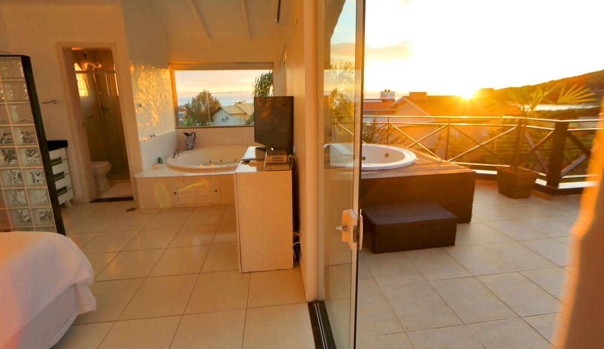
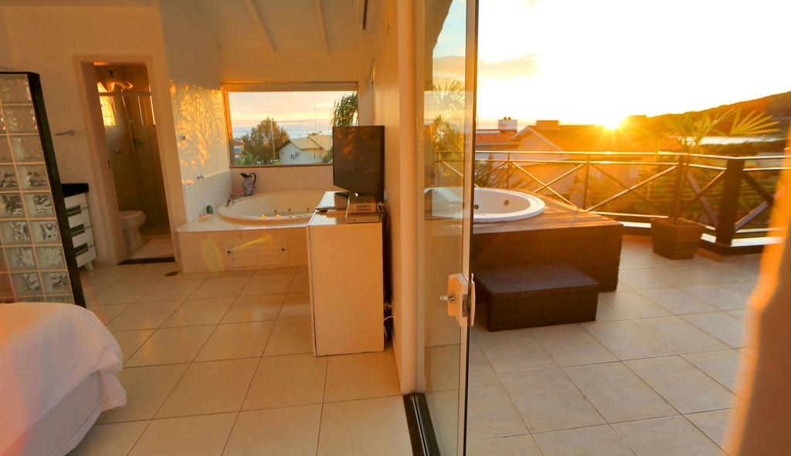
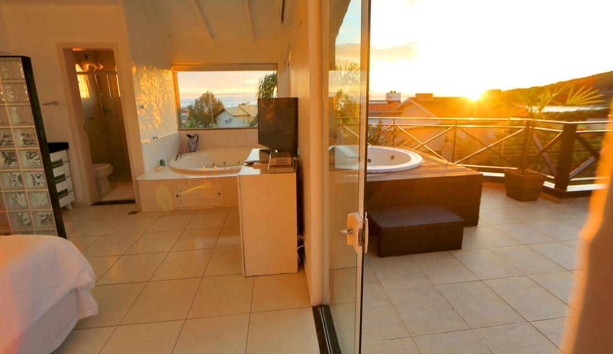

Pousada Marquesa Balneario Camboriu está localizado a 100 metros de Praia de Taquaras e oferece piscina ao ar livre, jacuzzi e estacionamento privado gratuito. A Praia Central fica a 10 minutos de carro de Pousada Marquesa.
O centro da cidade de Balneário Camboriú encontra-se a 6 km do hotel, enquanto o Zoológico do Complexo Ambiental Cyro Gevaerd pode ser alcançado a pé. A propriedade oferece aos hóspedes acesso à praia de areia. Você também pode visitar Pr do Pinho Nudismo bem rápido.
Os quartos do Pousada Marquesa vêm com o mini frigobar e o banheiro separado. Desfrute de vistas para o mar enquanto se hospeda neste hotel. Os banheiros privados incluem secador, lençóis de banho e toalhas.
Os hóspedes podem começar o dia com um café da manhã bufê generoso todas as manhãs. Para o jantar, o restaurante oferece refeições de cozinha à base de marisco. O local tem um bar com karaokê e terraço. Restaurante Sushiru está situado a 200 metros da propriedade e é especializado em cozinha japonesa e asiática. Os hóspedes do Pousada Marquesa podem desfrutar de terraço ensolarado, livraria e utensílios para churrasco.
Para fazer sua reserva: Clique Aqui
